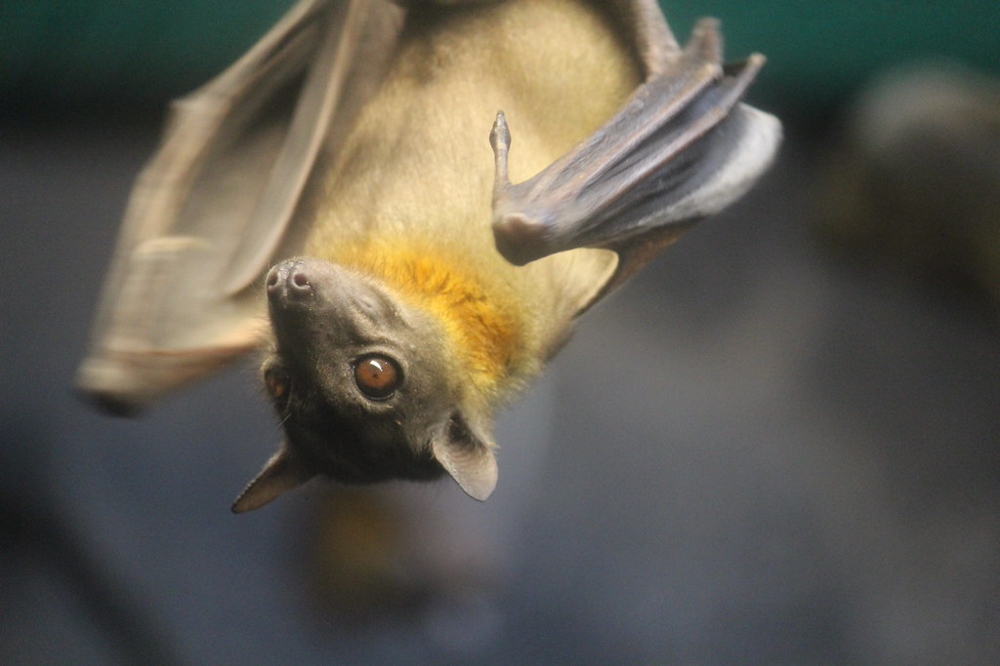

Straw Colored Fruit Bats are a large species of bat native to Sub-Saharan Africa. With a wingspan of 3 feet, it is considered a megabat. Each year, these bats partake in a mass migration to a particular swamp in Zambia. Their immense wingspans cover the sky as thousands journey to this swamp for one reason: ripe mangos. The bats feast on endless amounts of ripe manogos, which are their favorite treats!
